黄
黄伟
主持人
+关注
今天主持了一场{仪式类型}，{场景描述}。在追思会上，真诚地陪伴比华丽的辞藻更重要。
邓
邓强
礼仪师
+关注
礼仪服务中，仪态要端庄得体。细节决定品质，我们用心对待每一个环节。


丁
丁伟
礼仪师
+关注
作为礼仪师，每一次告别都是一次生命的教育。用专业和温暖，陪伴每一个家庭度过艰难时刻。

唐
唐娜
摄影师
+关注
殡葬摄影需要构图要简洁，突出主题。在庄重与温情之间找到平衡。


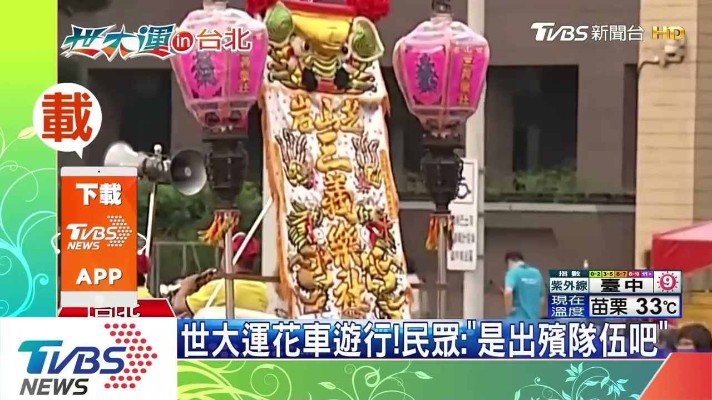

平
平丽
摄像师
+关注
殡葬摄像需要注意{技术要点}。在尊重逝者的同时，记录珍贵的回忆。


王
王芳
策划师
+关注
今天为王芳策划了一场特别的告别仪式。安排了温馨的追思环节，家属连声道谢。生命的最后一程，值得被温柔对待。

于
于强
摄影师
+关注
分享今天拍摄的灵堂布置。{拍摄说明}，用照片留住最后的记忆。📷

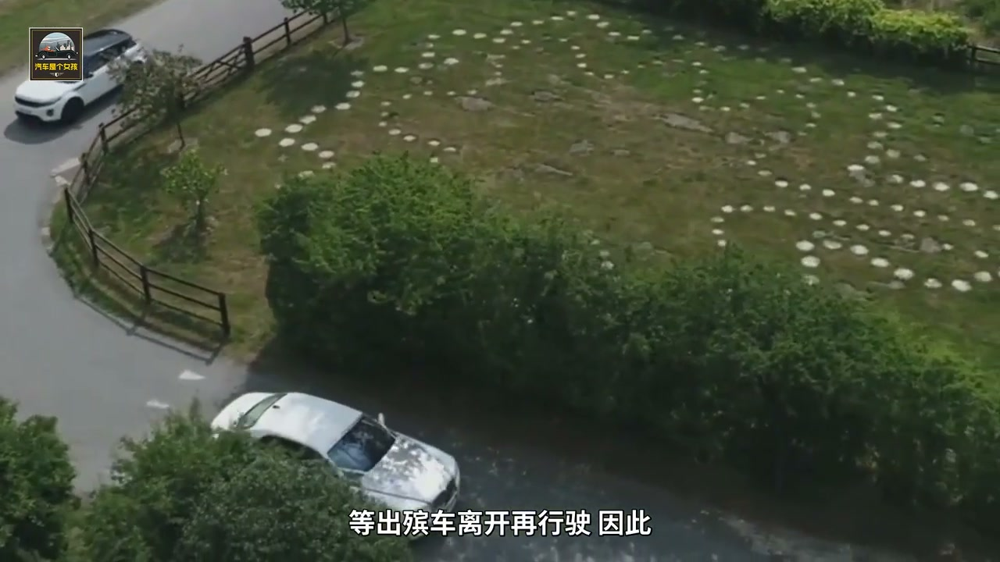


龙
龙伟
花艺师
+关注
为李奶奶设计了灵堂花艺。精心设计的花艺造型，希望能为逝者营造一个温馨的环境。
张
张馆长
殡仪馆
+关注
【重要通知】{通知内容}。如有疑问请致电{电话}。


易
易明
摄像师
+关注
殡葬摄像需要注意{技术要点}。在尊重逝者的同时，记录珍贵的回忆。
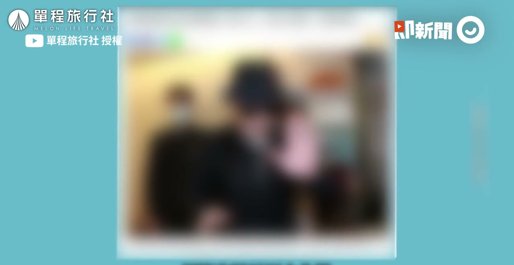


李
李刚
乐队
+关注
刚刚结束一场告别仪式的演奏。今天演奏了《安魂曲》，每一个音符都是祝福。🎸

孙
孙丽
策划师
+关注
从事策划工作5年，最大的感悟是：用专业和爱心陪伴每一个家庭。每一次服务，都是一次对生命的致敬。

陈
陈经理
殡仪馆
+关注
【行业资讯】{资讯内容}。关注殡葬行业发展，提升服务品质。
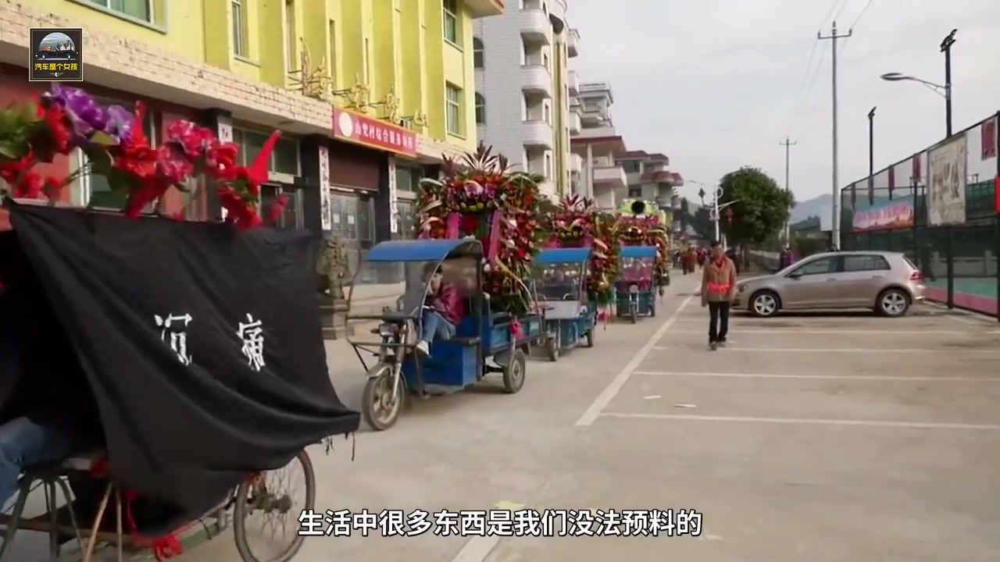
黄
黄伟
主持人
+关注
分享一个小技巧：在守灵夜，要给家属留出情感释放的空间。给家属留出情感释放的空间，也是一种尊重。

吴
吴涛
乐队
+关注
在告别仪式上演奏，生命的价值不在于长度，而在于厚度。用音乐抚慰悲伤的心灵。

魏
魏静
礼仪师
+关注
礼仪服务中，细节要一丝不苟。细节决定品质，我们用心对待每一个环节。
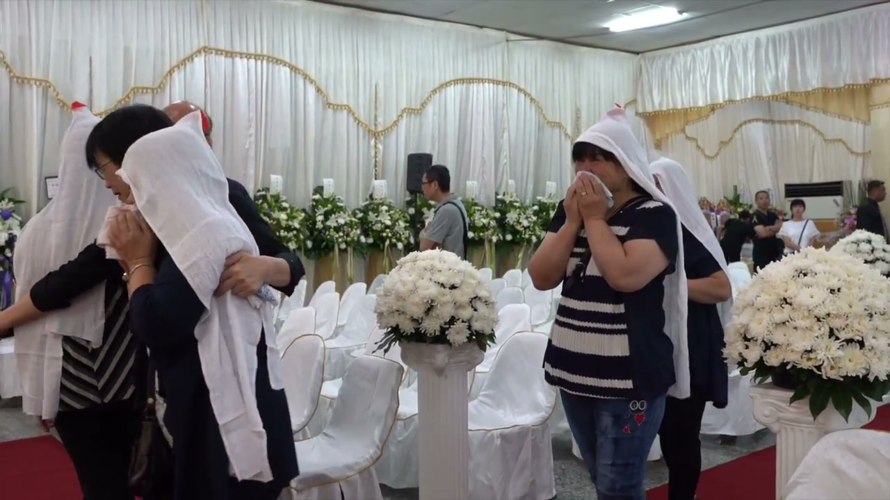
齐
齐涛
花艺师
+关注
今天做了一组白菊花艺，搭配绿叶，寓意生命轮回。每一朵花的位置都经过精心设计。


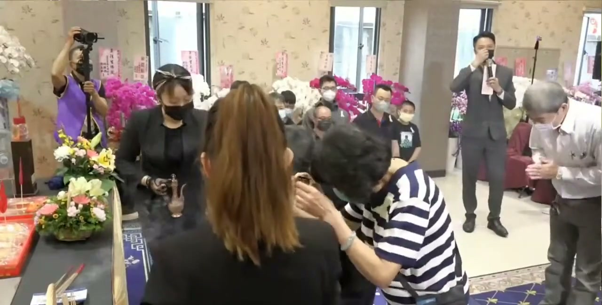
梁
梁敏
摄像师
+关注
殡葬摄像需要注意{技术要点}。在尊重逝者的同时，记录珍贵的回忆。

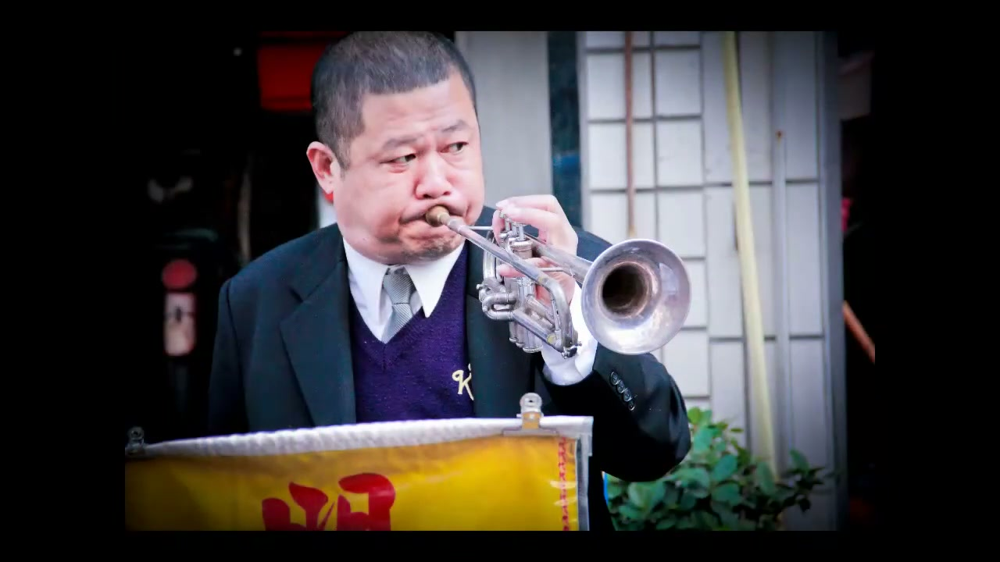


黄
黄婷
舞蹈
+关注
创作这支舞蹈时，{创作理念}。希望通过舞蹈，给家属带来慰藉。


万
万峰
花艺师
+关注
今天做了一组康乃馨花艺，以白色为主色调，象征纯洁与永恒。每一朵花的位置都经过精心设计。
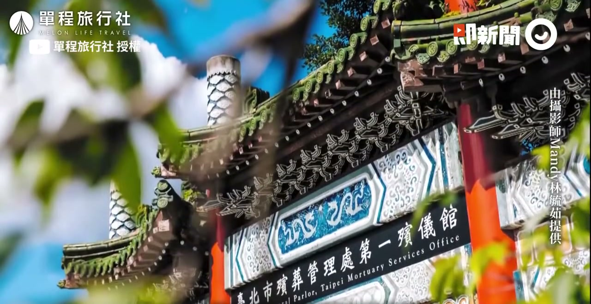

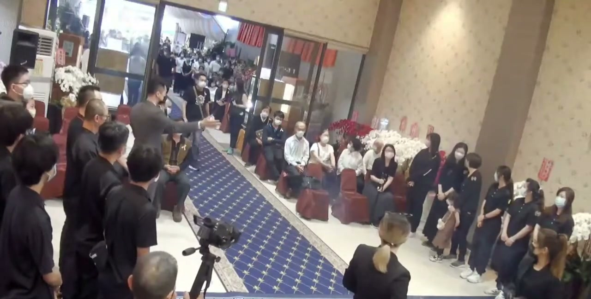

沈
沈娜
摄影师
+关注
为王爷爷拍摄了纪念照片。{工作内容}，希望这些照片能成为永恒的回忆。


于
于强
摄影师
+关注
为张老先生拍摄了纪念照片。{工作内容}，希望这些照片能成为永恒的回忆。

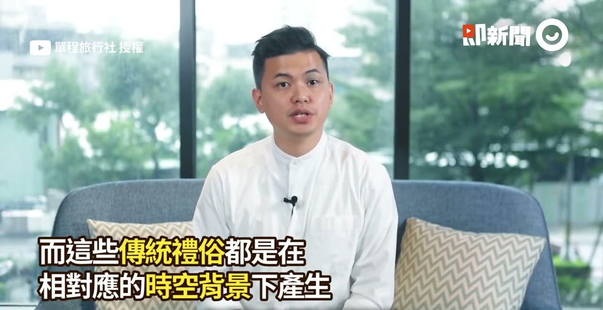
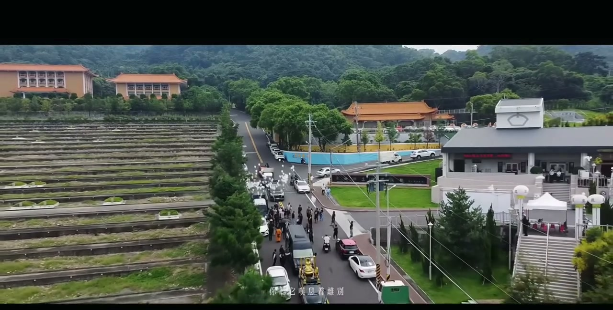
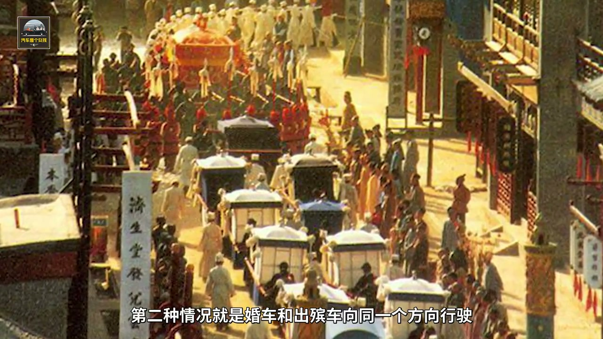
易
易明
摄像师
+关注
今天完成了{仪式类型}的影像记录。用影像记录珍贵的回忆，用镜头记录生命的最后时刻。🎥


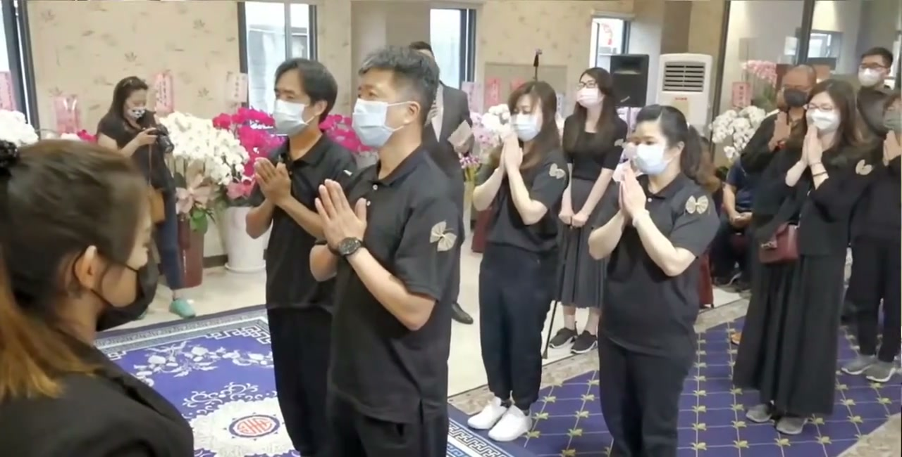

李
李刚
乐队
+关注
乐队排练了新曲目《{曲名}》，{排练说明}。音乐的力量真的很神奇。
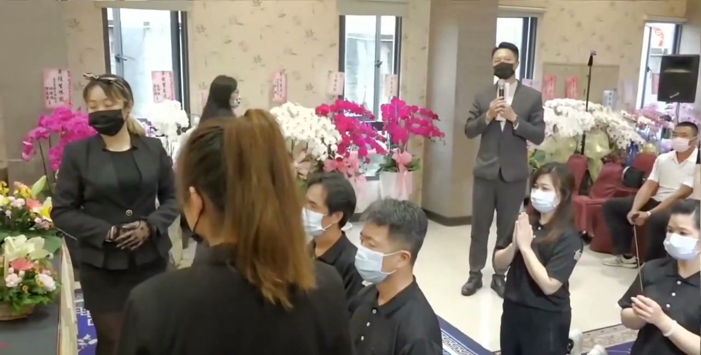


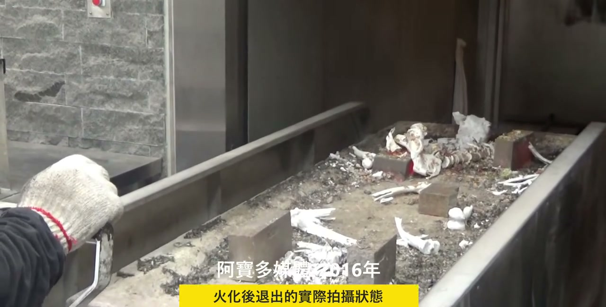
曾
曾慧
礼仪师
+关注
作为礼仪师，生命的价值不在于长度，而在于厚度。用专业和温暖，陪伴每一个家庭度过艰难时刻。
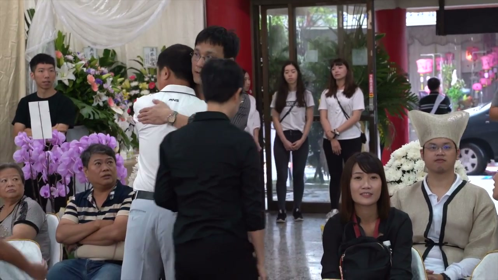

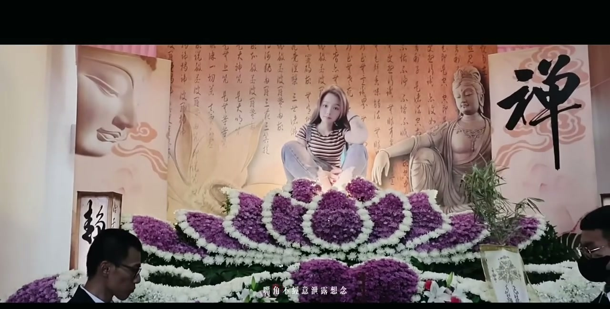

孙
孙道士
法事
+关注
分享一段{经文名}：{经文内容}。诵经回向，功德无量。


李
李明
乐队
+关注
乐队排练了新曲目《{曲名}》，{排练说明}。音乐的力量真的很神奇。

平
平丽
摄像师
+关注
殡葬摄像需要注意{技术要点}。在尊重逝者的同时，记录珍贵的回忆。


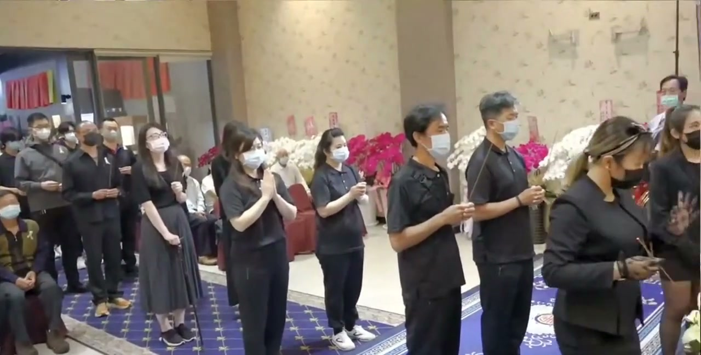

孔
孔敏
入殓师
+关注
今天完成了2位逝者的入殓服务。细心擦拭，一丝不苟，让逝者以最安详的样子离开。


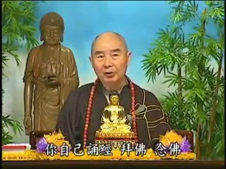

吴
吴馆长
殡仪馆
+关注
【服务介绍】本馆提供专业的殡葬服务团队，价格透明，服务规范。欢迎咨询了解。